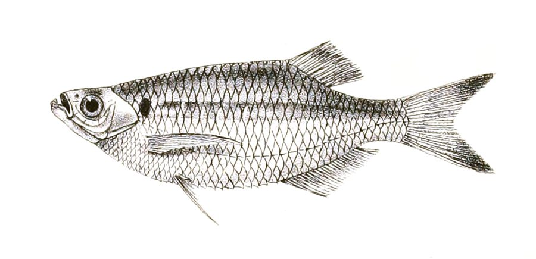

इंडियन ग्लास बार्ब मछलीIndian Glass Barb
Laubuka laubuca · Cyprinidae · FSH-0049

- Scientific name वैज्ञानिक नाम
- Laubuka laubuca (Hamilton, 1822)
- Family कुल
- Cyprinidae
- Hindi हिंदी
- इंडियन ग्लास बार्ब मछली
- Local names स्थानीय नाम
- indian glass barb, glass barb, laubuca machhli, daryai laubuca, laubuca
- Status here यहाँ की स्थिति
- native
- Movement आवागमन
- Resident, here all year
- Known from कहाँ दर्ज
- Others have published records from the wider Awadh–Purvanchal plain, none yet from Basti–Ayodhya अवध–पूर्वांचल से दूसरों के प्रकाशित अभिलेख, बस्ती–अयोध्या से अभी नहीं
- IUCN IUCN
- not evaluated
- Review समीक्षा
- not yet reviewed
When to look कब देखें
Present all year. साल भर मौजूद।
Uses and possibilities उपयोग और संभावनाएँ
Drawn from the documented uses in the profile below, where each is labelled traditional, current or a research lead. All uses →
Tell it apart from इनसे अलग पहचानें
इंडियन ग्लास बार्ब मछली / Indian Glass Barb
Laubuka laubuca (Hamilton, 1822) — Cyprinidae
इंडियन ग्लास बार्ब मछली — स्वच्छ तालाबों, नालों और जलीय पौधों से भरे तालों में पाई जाने वाली एक छोटी, चौड़ी और कांच जैसी अर्ध-पारदर्शी देसी मछली है। इसका शरीर बहुत चपटा होता है और इसके सीने के पंख पंखों की तरह लंबे होते हैं, जिनकी मदद से यह पानी की सतह पर उड़ती हुई छलांग लगा सकती है। इसके कंधे और पूँछ के आधार पर एक-एक काला धब्बा होता है। यह पानी की सतह पर तैरते मच्छरों के लार्वा को खाती है और एक्वेरियम में बहुत पसंद की जाती है।
Quick Identification त्वरित पहचान
| Feature | Description |
|---|---|
| Size | Small freshwater cyprinid; reaches about 10.5 cm TL (Froese & Pauly 2025) |
| Body Shape | Strongly compressed laterally, deep, with a sharp ventral keel (Hamilton 1822) |
| Head & Mouth | Small head; mouth directed steeply upward (vertical cleft); no barbels (Talwar & Jhingran 1991) |
| Pectoral Fins | Exceptionally long, wing-like, reaching beyond pelvic fin base (Hamilton 1822) |
| Colour & Translucency | Translucent greenish-gold with an iridescent blue-green lateral stripe (Talwar & Jhingran 1991) |
| Diagnostic Spots | Black shoulder spot behind operculum and a distinct black spot on caudal peduncle (Talwar & Jhingran 1991) |
| Dorsal Fin | Short, inserted far back opposite the origin of the anal fin (Hamilton 1822) |
Field tip: Look near the surface of calm, weed-rich ponds and oxbow wetlands. A tiny, translucent, hatchet-shaped fish with long wing-like pectoral fins, a black shoulder spot, and a black spot at the tail base, skimming just below the surface film, is the Indian Glass Barb.
हिंदी: यह छोटी, कांच जैसी पारदर्शी मछली पानी की सतह के पास तैरती है। इसके सीने के पंख काफी लंबे होते हैं और इसके कंधे व पूँछ पर एक-एक काला निशान होता है।
Morphology आकारिकी
Size as given by FishBase (Froese & Pauly 2025):
| Measurement | Range | Source |
|---|---|---|
| Maximum length | 10.5 cm TL | Froese & Pauly (2025), FishBase |
Adult description:
Laubuka laubuca has an exceptionally deep, strongly compressed, and hatchet-shaped body (Hamilton 1822). The dorsal profile is nearly straight or gently arched, while the ventral profile is deeply convex, terminating in a sharp, knife-like (trenchant) keel running from beneath the pectoral fin base to the vent (Talwar & Jhingran 1991). The head is small, pointed, and laterally compressed; eyes are prominent and large (Hamilton 1822). The mouth is small and directed steeply upward in an almost vertical cleft, completely lacking barbels (Talwar & Jhingran 1991).
The pectoral fins are remarkably elongate and falcate, resembling bird wings, and extend well past the pelvic fin origin (Talwar & Jhingran 1991). The pelvic fins are small. The dorsal fin is inserted far back on the body, positioned directly over the anterior portion of the anal fin, with 2 unbranched and 8 branched rays (Talwar & Jhingran 1991). The anal fin is moderately long with 17 to 22 branched rays. The caudal fin is deeply forked with equal pointed lobes (Hamilton 1822). The lateral line is complete and deeply curved downward along the lower flank, containing 31 to 37 scales (Talwar & Jhingran 1991).
In life, the fish is glass-like and translucent with shimmering pale golden-green hues on the back and silvery reflections on the belly (Talwar & Jhingran 1991). A brilliant, narrow turquoise or electric-blue horizontal line runs along the posterior flank (Hamilton 1822). Diagnostic markings include a bold black circular spot just behind the upper gill cover and a second distinct dark spot at the base of the caudal fin (Talwar & Jhingran 1991). Fins are hyaline with a faint yellow-green wash.
हिंदी: इसका शरीर लगभग 10.5 सेमी तक लंबा, चपटा और कांच जैसा पारदर्शी होता है। सीने के पंख बहुत लंबे होते हैं। कंधे और पूँछ के पास दो अलग-अलग काले धब्बे इसकी मुख्य पहचान हैं।
Behaviour & Ecology व्यवहार और पारिस्थितिकी
The Indian Glass Barb is a surface-dwelling, pelagic fish restricted to calm freshwater environments (Talwar & Jhingran 1991). It thrives in perennial village ponds, oxbow lakes (tals), sluggish streams, and flooded paddy fields rich in floating plants such as Lemna, Azolla, and Eichhornia.
Small groups of five to twenty individuals patrol the topmost five centimetres of the water column (Daniels 2002). Using their expanded, wing-like pectoral fins, they can burst forward with explosive speed and even leap out of the water to skim short distances across the surface film when pursued by aquatic predators (Talwar & Jhingran 1991). Their upward-facing mouths allow them to pick terrestrial insects, springtails, and emerging midges directly off the surface without tilting their bodies (Daniels 2002). They avoid strong river currents and muddy, turbulent flood channels.
हिंदी: यह मछली पानी की ऊपरी सतह पर तैरती है और अपने लंबे पंखों की मदद से पानी से बाहर छलांग भी लगा सकती है। यह शांत तालाबों और जलीय पौधों वाले पानी में रहना पसंद करती है।
Life Cycle / Phenology जीवन चक्र
Seasonal phenology in northern Indian alluvial freshwater systems across the agricultural year (Talwar & Jhingran 1991; Daniels 2002):
| Season / Month | Stage | Field Observation |
|---|---|---|
| July–August (Kharif monsoon) | Spawning & breeding | Pairs spawn among submerged roots of floating plants in flooded wetlands (Talwar & Jhingran 1991) |
| September–November (Post-monsoon) | Juvenile recruitment | Fry school among duckweed and water hyacinth roots (Daniels 2002) |
| December–February (Rabi winter) | Sub-adult schooling | Schools assemble in sunny, vegetated corners of perennial tanks (Talwar & Jhingran 1991) |
| March–May (Summer / Zaid) | Surface feeding | Intense foraging on insects and rotifers as water temperatures rise (Daniels 2002) |
| June (Pre-monsoon) | Maturation of brooders | Gravid females exhibit swollen bellies awaiting monsoon downpours |
Breeding takes place during the monsoon rains (Talwar & Jhingran 1991). Males display heightened iridescence and perform fluttering dances around females near the surface. Females deposit small, adhesive eggs on the undersides of floating plant leaves and weed roots. The eggs hatch after a few days, and tiny transparent larvae hang vertically from vegetation before becoming free-swimming surface feeders (Daniels 2002).
हिंदी: मानसून में पानी भरने पर यह मछली तैरते हुए जलीय पौधों के नीचे अंडे देती है। कुछ दिनों में अंडों से बच्चे निकलकर पौधों की जड़ों में छिप जाते हैं और तेजी से बढ़ते हैं।
Diet and Feeding Behaviour आहार
Laubuka laubuca is an obligate surface micro-carnivore and insectivore (Talwar & Jhingran 1991):
Natural diet components:
- Mosquito larvae and pupae (Culex, Anopheles, and Aedes), captured directly at the surface (Daniels 2002).
- Small terrestrial insects trapped on the water film, including ants, aphids, thrips, and tiny gnats (Talwar & Jhingran 1991).
- Emerging aquatic insects, particularly chironomid midges and mayflies.
- Planktonic micro-crustaceans, including water fleas (Daphnia) and cyclopoid copepods.
- Floating microscopic green algae browsed opportunistically.
हिंदी: यह पानी की सतह पर तैरने वाले मच्छरों के लार्वा, पानी में गिरने वाली चींटियों, छोटे कीड़ों और प्लवक को खाती है।
Predators / Natural Enemies शत्रु
Documented natural predators in northern Indian alluvial freshwater systems:
- Surface-hunting predatory fishes: Needlefish like Xenentodon cancila (Freshwater Garfish), small snakeheads like Channa punctata (Spotted Snakehead), and Heteropneustes fossilis (Stinging Catfish) attack schools from below.
- Piscivorous birds: Common kingfishers, little egrets, and pond herons snatch surface-dwelling barbs.
- Predatory diving beetles and water scorpions: Ambush juveniles in dense duckweed mats.
हिंदी: सुइया मछली (garfish), गिरई, सिंघी, बगुले और किंगफिशर पानी की सतह पर तैरने वाली इस छोटी मछली का शिकार करते हैं।
Agricultural / Human Relevance कृषि प्रासंगिकता
Biological mosquito vector control: The Indian Glass Barb is one of the most effective native larvivorous fishes of northern India (Talwar & Jhingran 1991). Because it feeds almost exclusively in the upper layer of the water column where mosquito larvae hang to breathe, it naturally suppresses populations of vector mosquitoes transmitting malaria, filariasis, and dengue (Daniels 2002). Maintaining healthy populations in village tanks and irrigated paddy ditches provides chemical-free public health benefits to rural communities (Talwar & Jhingran 1991).
Aquarium ornamental trade: Highly valued in the domestic and international aquarium hobby as an active, peaceful, and visually striking "glass barb" that leaps gracefully and lives amicably with other peaceful species.
Traditional: Harvested in mixed fine-net catches from village ponds and eaten fresh in small local curries.
Today: Valued primarily as an indigenous ornamental aquarium fish and public health biological control agent.
Research direction (a lead, not a result): Assessing field deployment strategies for Laubuka laubuca in municipal stormwater retention ponds to suppress urban mosquito breeding.
हिंदी: यह मछली पानी की सतह पर रहकर मच्छरों के लार्वा को नष्ट करती है, जिससे मलेरिया और फाइलेरिया जैसी बीमारियों की रोकथाम होती है। यह एक्वेरियम के लिए भी एक सुंदर मछली है।
Expected Locally स्थानीय रूप से अपेक्षित
Not a field record. Written from published accounts for eastern Uttar Pradesh. No confirmed local sighting yet — if you have seen it, that is what the atlas needs.
अभी तक स्थानीय पुष्टि नहीं। यह विवरण प्रकाशित स्रोतों से है, किसी अवलोकन से नहीं।
The Indian Glass Barb is expected across eastern Uttar Pradesh in weed-rich village tanks, oxbow lakes (tals), and vegetated canal shallows. Look in quiet shallows and beneath floating vegetation mats from August through December. GBIF holds published records from the wider Awadh–Purvanchal plain, none yet from Basti–Ayodhya. A voucher photograph showing the translucent compressed body, wing-like pectoral fins, and distinct shoulder and caudal spots, submitted via the About page, would confirm the first local documentation for the project area.
Distribution वितरण
Global range: Widely distributed across South and Southeast Asia, natively occurring in India, Pakistan, Nepal, Bangladesh, Sri Lanka, Myanmar, and the Malay Peninsula (Talwar & Jhingran 1991).
In India: Found throughout the major river systems of northern, central, and peninsular India, including the Indus, Ganges, Brahmaputra, Mahanadi, and Krishna drainages (Menon 1999).
In Uttar Pradesh: Recorded throughout the Ganges, Ghaghara, Rapti, and Gomti basins in perennial oxbow lakes and village tanks.
In Basti district / eastern UP: Expected as a resident native species in perennial tals, oxbow wetlands, and weed-rich canals of the Kuwano and Ghaghara systems.
हिंदी: यह भारत, पाकिस्तान, नेपाल, बांग्लादेश और म्यांमार में पाई जाती है। उत्तर प्रदेश में यह तालाबों, तालों और नहरों में स्थायी रूप से पाई जाने वाली प्रजाति है।
Research Questions शोध प्रश्न
- What is the daily consumption rate of Laubuka laubuca on Anopheles culicifacies larvae compared to invasive Gambusia affinis? / देशी ग्लास बार्ब विदेशी गैम्बूसिया की तुलना में कितने अधिक मच्छरों के लार्वा खाती है?
- How do seasonal herbicide applications for water hyacinth control affect glass barb surface foraging?
- What are the jumping mechanics and escape trajectories of Laubuka laubuca under predatory fish strikes? / शिकारी मछली के हमले पर यह पानी से कितनी दूर और कैसे छलांग लगाती है?
- Can community health initiatives breed Laubuka laubuca locally for distribution into village open wells?
- How does elevated water temperature in shallow ponds during summer affect dissolved oxygen tolerance in this species?
Similar Species मिलती-जुलती प्रजातियाँ
| Species | How to tell apart | हिंदी | |
|---|---|---|---|
| Chela cachius ([[silver_hatchet_chela\ | Silver Hatchet Chela]]) | Abdomen keeled from throat to anus; flanks pure silver, lacking distinct black caudal spot | सिल्वर हैचेट चेला — पेट की धार गले से शुरू होती है और पूँछ पर काला धब्बा नहीं होता |
| Salmostoma bacaila ([[large_razorbelly_minnow\ | Large Razorbelly Minnow]]) | Body much larger and elongate-cylindrical; lacks the deep hatchet body and caudal spot | लार्ज रेज़रबेली मिनो — शरीर लंबा और बेलनाकार होता है, पूँछ पर धब्बा नहीं होता |
| Danio rerio ([[zebrafish\ | Zebrafish]]) | Body slender and cylindrical; marked with continuous horizontal blue stripes; possesses barbels | जेब्राफिश — शरीर बेलनाकार होता है और पूरे शरीर पर नीली धारियाँ होती हैं |
Field rule: A tiny, translucent hatchet-shaped cyprinid with elongate wing-like pectoral fins, a black shoulder spot, and a distinct black spot at the caudal fin base is Laubuka laubuca.
हिंदी: सिल्वर हैचेट चेला पर पूँछ का काला धब्बा नहीं होता और जेब्राफिश के पूरे शरीर पर धारियाँ होती हैं, जबकि ग्लास बार्ब कांच जैसी पारदर्शी होती है और इसके कंधे व पूँछ पर काले धब्बे होते हैं।
Taxonomy & Classification वर्गीकरण
Original description. Described by Francis Hamilton in 1822 as Cyprinus laubuca in An Account of the Fishes Found in the River Ganges and Its Branches, page 260. Type locality: Ponds of northern Bengal.
Subspecies. Monotypic — no subspecies are recognized across its continental range.
Family and order placement. Order Cypriniformes, family Cyprinidae, subfamily Danioninae (or Chedrinae). Long included under Chela, modern phylogenetic and morphological revisions validate Laubuka Bleeker, 1860, as a distinct genus.
Phylogenetic notes. Laubuka laubuca is characterized by its trenchant abdominal keel, upward mouth, and distinctive dual pigmentation spots (shoulder and caudal), separating it from true Chela species (Talwar & Jhingran 1991).
IUCN status rationale. Not evaluated (NE) on the global IUCN Red List of Threatened Species. It maintains widespread, abundant wild populations across South Asian wetlands.
हिंदी: इसका वैज्ञानिक नाम Laubuka laubuca है और यह Cyprinidae परिवार की सदस्य है। इसे पुरानी पुस्तकों में Chela laubuca लिखा गया है।
Photo Gallery फोटो गैलरी
No photos yet — add field photos to media/species/indian_glass_barb/ and run node scripts/sync_photos.js.
Photos needed आवश्यक फोटो
- [ ] Lateral view of live adult showing translucent body and dual black spots (पारदर्शी शरीर और दोनों काले धब्बों का दृश्य)
- [ ] Close-up of elongate wing-like pectoral fins (सीने के लंबे पंखों की तस्वीर)
- [ ] Live school swimming just below the water surface film (सतह पर तैरता छोटा झुंड)
- [ ] Ventral view displaying the sharp knife-like abdominal keel (पेट के नीचे की धार का दृश्य)
References संदर्भ
- Hamilton, F. (1822). An Account of the Fishes Found in the River Ganges and Its Branches. Archibald Constable and Company, Edinburgh, p. 260.
- Talwar, P. K. & Jhingran, A. G. (1991). Inland Fishes of India and Adjacent Territories, Vol. 1. Oxford & IBH Publishing Co., New Delhi, pp. 342–343.
- Menon, A. G. K. (1999). Check list - fresh water fishes of India. Records of the Zoological Survey of India, Occasional Paper No. 175, p. 34.
- Daniels, R. J. R. (2002). Freshwater Fishes of Peninsular India. Universities Press, Hyderabad, pp. 52–54.
- Froese, R. & Pauly, D. (Eds.) (2025). FishBase. World Wide Web electronic publication.
- GBIF Occurrence Data — Laubuka laubuca, India (2025).
Source file: species/fauna/fish/indian_glass_barb.md